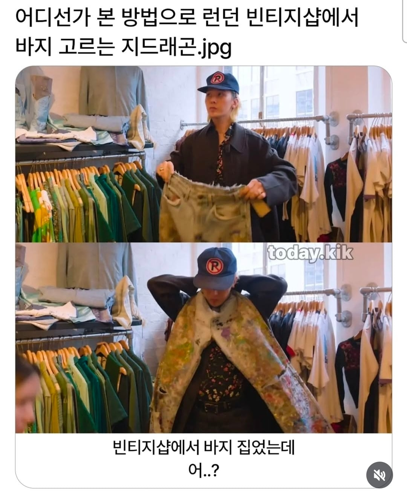
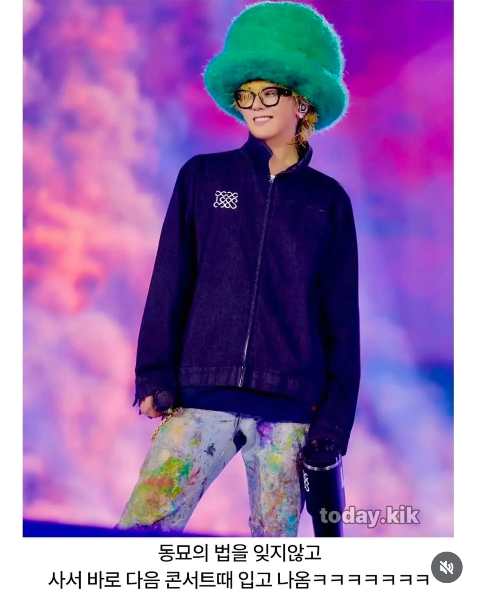

쵸파냐
초록모자에
파란저지기는해
자메로콰이
가랭이 빵꾸난줄
바지 저거터진거임?
블랙홀
기본적으로 색감이 있으니 뭐...
남대문열렸데요 푸하핳
바지터졌네
마지막 스타일링 자미로콰이 같네
Got canned heat in my heals tonight, baby
도니의 남자 지디
지디 아무리 봐도 엑스재팬 히데 느낌 낭낭하단 말이지...항상.
ㅈ같이입어도 지디가입으면 지디패션이되버림ㅋㅋ
도매상인줄 알고 비싸게 받았겠네
다른 사람들은 지디를 엄청 추켜세우니까 거기에서 오는 부담감이 있는 듯. 근데 정형돈은 그냥 사람 권지용으로 순수하게 대하니까 그걸 지디가 엄청 좋아하는 듯.
자미로콰이 모자잖아 색깔은 다르지만
에픽하이때도 순수하게웃더라
원리가 뭐냐
목둘레×2가 허리둘레인건가?
를 물어봄
👕 '목둘레 × 2 = 허리둘레' 바지 사이즈 꿀팁, 진짜일까?
결론부터 말하면 정상 체중에게는 꿀팁이지만, 한국 성인의 약 60%(과체중 이상)에게는 이 공식이 맞지 않습니다. 살이 찔 때는 목보다 배(내장지방)가 훨씬 빠르게 늘어나기 때문입니다.
📊 체형별 목-허리 비율 (한국 성인 기준)
🔹 저체중 (인구의 약 4.5%)
• 비율: 1.8 ~ 1.9배
• 특징: 뱃살이 없어 허리가 목둘레의 2배가 채 되지 않음.
🔹 정상 체중 (인구의 약 36.3%)
• 비율: 2.0 ~ 2.2배
• 특징: '곱하기 2' 공식이 딱 맞아떨어지는 표준 체형!
🔹 과체중 (인구의 약 21.5%)
• 비율: 2.2 ~ 2.4배
• 특징: 목보다 배가 더 빨리 나오면서 공식이 빗나가기 시작함.
🔹 비만 (인구의 약 37.8%)
• 비율: 2.4 ~ 2.7배 이상
• 특징: 비율이 2.4를 넘어가면 내장지방 및 대사증후군 위험 신호🚨
💡 핵심 요약
✔️ 바지를 목에 둘러 사이즈를 가늠하는 팁은 '정상 체중'에게만 유효해요.
✔️ 한국은 남성 비만율(약 50%)이 여성(약 27.5%)보다 훨씬 높아서, 남성보다는 여성에게 더 잘 맞는 꿀팁입니다.
✔️ 이 비율(허리둘레÷목둘레)이 2.4를 넘는다면 뱃살 관리가 필요한 시점입니다!
쉽게 요약해줘
살빼
배고파
돼지면 목둘레보다 20퍼 더 길어야함
배고프다고
그거나아님
맞을 확률이 40%라는거네.. 그럼 목에 대 보고 안맞는 바지를 사야겠구나
아아니...
기분 나빠졌어
도대체 왜...
콜드플레이+자미로콰이 느낌나게 입었네
이제 좀 연예인 같네
같은바지 아닌거 같았는데 무늬 보니까 맞네. 찢어진곳이 안보여서 단 바지인줄
뚱땡이들도 저거 가능함 ㅋㅋㅋ 목에 꽉 맞는 느낌이 아닌 헐렁한 느낌으로 하면 된다더라 ㅋㅋ
군대에서 분대애들한테 맛있는거 많이 사줬다함
그제야허
정형돈좌는 진짜 사업가였으면 한국에서 작게 한국 일으키는 기업 하나는 하고도 남았을듯 컨텐츠 예술 쪽으로
그런 당신을 위해 도니버거, 도니도니돈까스를 드립니다.
도니도니까쓰 맛있음 ㄱㄱ
옷 괜찮은데? ㅋㅋ
???:쓰읍 난 반댄데?
ㅋㅋㅋㅋㅋㅋㅋㅋ 잘배웠네